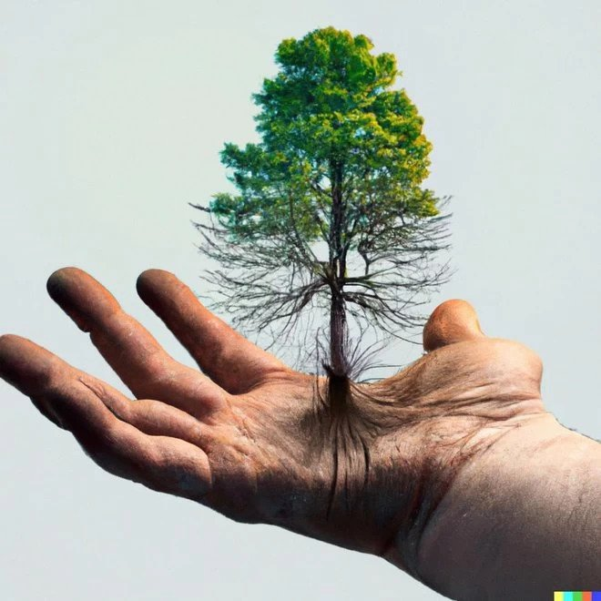
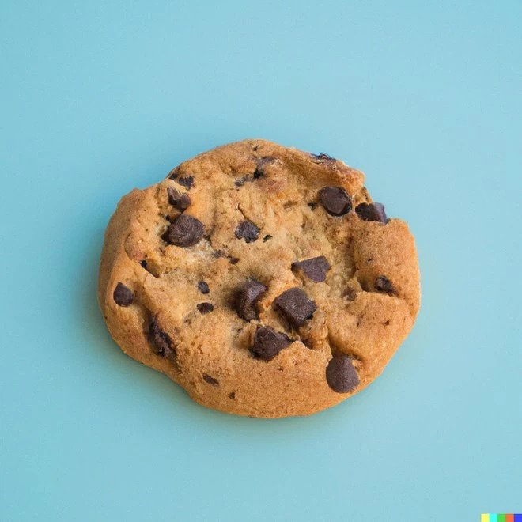
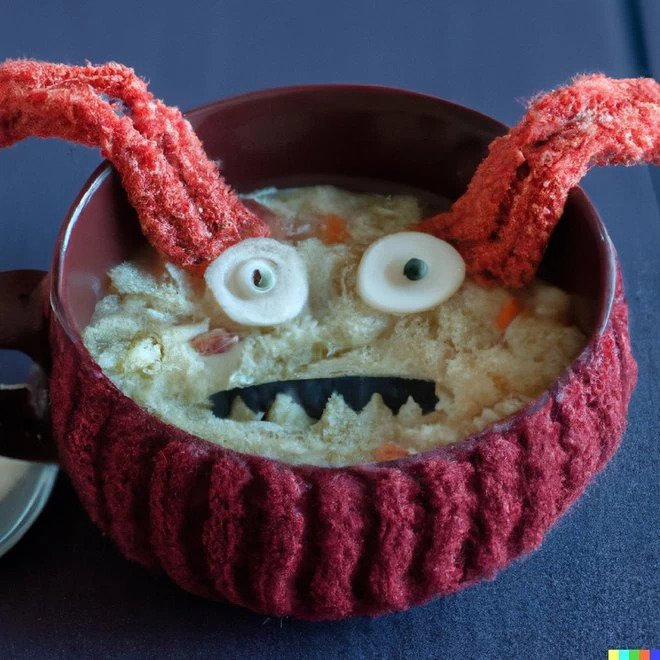
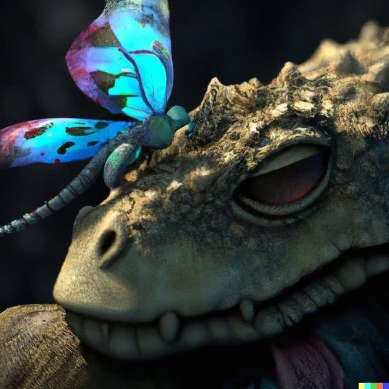
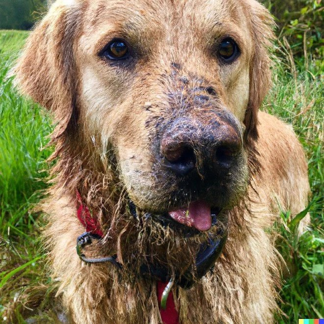

Casper De Bruycker
12/12/2005
1. A tree with roots
This one looks like one of the cheesy stock images you'll see when
searching for images about growing a business. Only the AI has made it
more raw with the roots growing into the person's hand.
This image is made with Dall-E 2

2. A tasty treat
You could assume that Dall-e 2 had an easy task here. It's likely the AI had a lot of cookie photos to learn from. But it's still incredible to think that this was created just from a request and not from a single photo snapped by a photographer.
This image is made with Dall-E 2

3. A monster bowl of soup
One of the less delicious food images that Dall-e 2 has created. This one shows "a bowl of soup that looks like a monster, knitted out of wool". We were told never to play with our food but this food looks like it would play with you.
This image is made with Dall-E 2

4. Digital creatures
Dall-e 2 is capable of creating all sorts of impressive images. Including astounding digital artwork of curious creatures.
“A butterfly perched on the snout of a sleeping dragon, digital art”
This image is made with Dall-E 2

5. A muddy dog
With all the photos that everyone posts online of their dogs it's no wonder that AI can create realistic images like this when asked to.
This image is made with Dall-E 2
